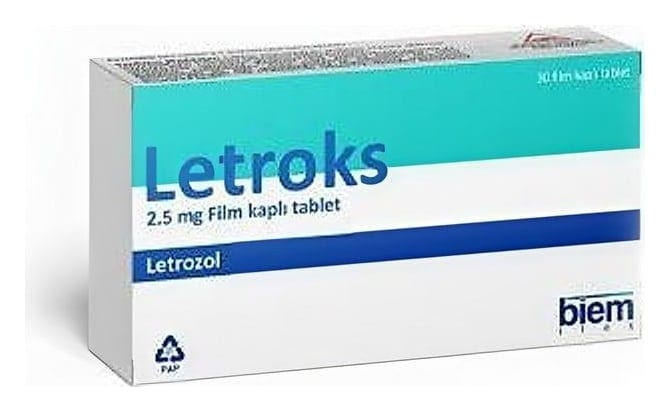

Letroks 2.5 mg Film Kaplı Tablet, 30 Adet

Ne için kullanılır
KT · Bölüm 1LETROKS 2,5 mg film kaplı tablet, film tabakası ile kaplanmış tabletler halindedir. Her tablet 2,5 mg letrozol içerir. LETROKS, 30 adet film kaplı tablet içeren blister ambalajlarda takdim edilmektedir.
Letrozol, aromataz inhibitörleri olarak adlandırılan bir ilaç grubuna dahildir. LETROKS ile yapılan tedavi hormonal (ya da endokrin) bir meme kanseri tedavisidir.
Meme kanserinin gelişimi sıklıkla, dişi cinsiyet hormonları olan östrojenler tarafından uyarılır. LETROKS östrojen üretiminde rol oynayan bir enzimi (aromataz) bloke etmek suretiyle östrojen miktarını azaltır ve böylece büyüyebilmek için östrojene ihtiyaç duyan meme kanserlerinin büyümesini önleyebilir.
Sonuç olarak da, tümör hücrelerinin büyümesi yavaşlar veya durur ve vücudun diğer kısımlarına yayılması yavaşlar veya durur. Ayrıca LETROKS, hem meme cerrahisinden önce tümör boyutunun küçültülmesinde kullanılabilir, hem de meme cerrahisinden sonra tümörün tekrar oluşmasını önlemede yardımcı olur.
LETROKS menopozdaki yani menstrüasyonları kesilen kadınlarda meme kanserinin tedavisi için kullanılır. Kanserin yeniden ortaya çıkmasını önlemede kullanılır. Meme kanseri ameliyatından sonra veya tamiksofen ile beş yıllık tedaviyi takiben birinci tedavi olarak kullanılabilir. LETROKS aynı zamanda meme tümörünün ileri evre meme kanseri olan hastalarda vücudun diğer kısımlarına yayılmasını önlemede kullanılır.
LETROKS tedavisinin izlenmesi LETROKS yalnızca sıkı tıbbi denetim altında alınmalıdır.
Doktorunuz tedavinin istenen etkiyi sağlayıp sağlamadığını kontrol etmek için durumunuzu düzenli olarak kontrol edecektir.
LETROKS’un nasıl etkili olduğu ya da bu ilacın size neden reçete edildiği hakkında sorularınız varsa doktorunuza sorun.